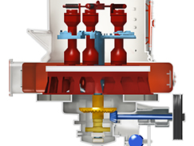
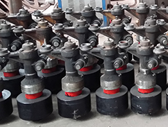
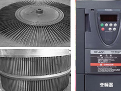
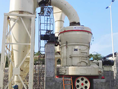
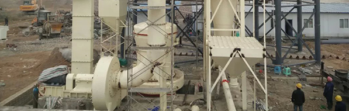
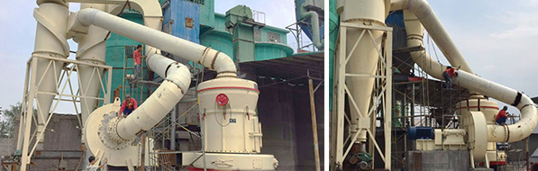
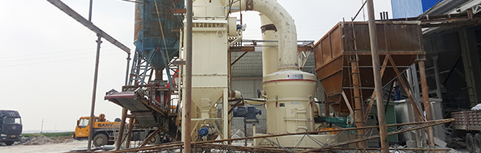

全国咨询热线：0371-67828877
全国咨询热线：0371-67828877专业欧版磨实力厂家
27年专注磨粉装备整体解决方案
欧版磨粉机·第四代智能磨机 多项专利 品质保证
-

-
进料粒度：≤ 40mm
成品细度：30-425目
生产能力：6.5-50T/H
适用物料：用于粉磨石英石、长石、方解石、滑石、重晶石、白云石、萤石、锰矿石、铁矿石、铜矿石、磷矿石、铝矾土等百余种莫氏硬度小于9.3、湿度小于6%的非易燃易爆矿产物料。
适用场景：砂石料场、混凝土搅拌站、干粉砂浆、电厂脱硫、石英砂生产等工业磨粉项目。
-
 ISO质量认证
ISO质量认证
-
 俄罗斯GOST认证
俄罗斯GOST认证
-
 欧盟CE认证
欧盟CE认证
欧版磨， 解决您的磨粉之痛
节能环保 磨粉首选-

产量大、效率高
采用磨辊联动增压技术，产量高；锥齿轮整体传动，传动链减少，能量损耗少。
 易损件利用率高易损件由高耐磨锰钢材质制成。铲刀与刀刃可分离，只需更换刀刃，降低成本。
-

细度可调可控
选粉系统采用变频式分析机，成品细度可调可控，选粉效率高。
 除尘效果好采用重叠式多级密封， 密封性能良好，除尘效果达到国家粉尘排放标准。
广泛适用于石灰石、方解石、大理石、石英石、重晶石、滑石、重钙、煤矸石、石膏、水渣、矿渣、铝矾土、膨润土、高岭土、水泥、煤、活性炭、石油焦、粉煤灰等百余种物料。
通矿欧版磨客户案例
27年工程服务经验
- 
-
01
贵州安顺时产15吨生石灰磨粉生产线
原料：石灰石 成品细度：325目
产量：15T/H
主要设备：MTW175欧版磨粉机整套设备、PE250*400颚式破碎机、TH315提升机。
客户反馈：从地基建造到安装调试至正式投入生产，通用公司安装技术人员全程跟踪指导安装，经试用，磨机磨粉效果好。
- 
-
02
陕西韩城时产20吨石灰石磨粉生产线
原料：石灰石 成品细度：325目
产量：≥20t/h 主要用途：电厂脱硫
主要设备：MTW175型欧版磨粉机。
客户反馈：经过通矿公司的专业安装调试，设备运行平稳、产量高，除尘效果符合国家环保标准。我们已经成为韩城的标杆企业，感谢郑州通用矿山机器厂家。
- 
-
03
泰国时产10吨滑石磨粉生产线
原料：滑石 成品细度：200目
产量：≥10t/h 主要用途：电厂脱硫
主要设备：MTW138欧版磨粉机、PEX150*750、脉冲除尘器、提升机、给料机。
客户反馈：该生产线自运行已经有一年多，设备操作简便，各项指标保持稳定，产量、细度均达到要求。郑州通用全方位的售后服务让我们的生产非常省心！
中国矿山设备研发/生产/出口基地 选择通矿的三大理由
-
 实力保障
实力保障
-
 发货保障
发货保障
-
 服务保障
服务保障
-

-
27年技术积淀，定制更省心
通矿27年破碎装备生产经验和技术积淀，拥有专业的解决方案和成熟的配套产品，能为客户提供一站式解决方案。产品贯彻国际机械加工工艺标准，每道工序力求精益求精，已通过ISO9001、欧盟CE和俄罗斯GOST等权威认证。产品远销亚、非、拉、欧、美和大洋洲等127个国家和地区。通矿公司已成为中国矿山设备的研发生产和出口基地。
-

-
15天快速交货，收货更安心
通矿拥有37664平方米厂房，六大生产线，27个生产车间，145套加工设备，在线员工623人，保证公司常规标准产品2-3天发货，定制类设备7-15天发货，大项目20-30天发货。发货后，售后技术团队全程跟进服务，确保生产安全顺利进行。
-

-
“三包”服务，品质更放心
通矿24小时客服在线服务，百十名技术与服务团队提供终身技术支持。发货后技术服务部全程跟进，确保项目安全顺利完工。设备质保12个月，7天不满意免费退换。故障问题2小时内指导诊断，24-48小时上门解决问题。实行国家“三包”服务，“包修、包换、包退”，质量问题免费解决。
郑州通用矿山机器有限公司27年矿山机械实力厂家